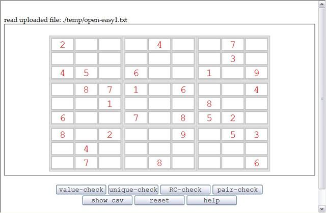
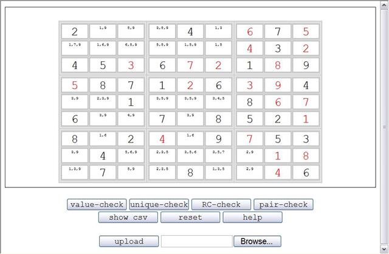
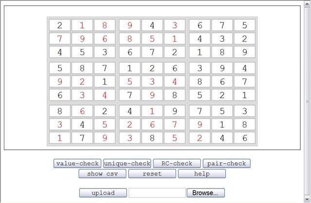

I found also a site that generates Sudoku's for you,
http://www.opensky.ca/~jdhildeb/software/sudokugen/,
where the software behind it is
http://sourceforge.net/projects/gnome-sudoku/.
These are open source, and therefore I could include an easy and a hard Sudoku for you.
Sudoku saved file format
The Sudoku's can be defined as a comma-separated file, either be exporting a spreadsheet as .csv file
or by entering the puzzle in the Solver grid and press the show csv button.
Upload a Sudoku

Enter a Sudoku
You can enter the Sudoku values directly into the grid.
Save your work by pressing the show csv button, and copy-paste the
comma-separated Sudoku values (highlight, press Ctrl-c, create a text file, open it, paste with Ctrl-v and save).
Solve a Sudoku
The objective of this Sudoku solver is to follow as much as possible the human way of reasoning.
We did not implement any brute-force or tree waliking algorithms. You can also edit the Sudoku values or the set
of possible values after each step and continue the solution.
The Value-Check Action
This action is useful if you would like to solve the Sudoku yourself, but you would like to avoid the pain
of finding all possible values for each field.
This action iterates over each field and calculates the possible values. If this is a single value, that will
lead to updatting the possible values already found. The Solver makes only one pass and does no recursion
after having found a value.
Newly found values are shown in red.

The Unique-Check Action
The solver performs first the value-check action, and then it looks at every row, column or block
to find values that occur only once in the possible value sets.
Newly found values are shown in red. By repeatedly pressing this button you can solve most
Sudoku's found in newspapers.
The RC-Check Action
This action first performs the Unique-check action and then checks in each block whether
there are values that occur only in one row or one column. In this case this value cannot appear in the
same row or column in the other two blocks that contain part of the row/column.
The possible values are adjusted accordingly.

The Pair-Check Action
This action first performs the Unique-check action and then checks in each row, column or block, whether
there are two pairs of the same possible values. In this case these values cannot appear in the
other fields of the same row, column or block.
The possible values are adjusted accordingly.
What if the Sudoku cannot be solved with these rules?
There are Sudoku's that cannot be solved with these rules. the included "very hard" example
is of that kind. After you have applied all rules until you can find no new values, you could try
brute force. Take away one value for a pair (you have 50% chance that it works) and try again.
If it fails, you can reload the sudoku and try the other value.
A check is not implemented yet to see if a solution is valid, therefore you should do this check
yourself.
The Clear, Reset and Undo Buttons
Clear clears the Sudoku matrix.
Reset sets the fields in the Sudoku matrix to the values they had after the latest file upload.
Undo restores the state to the state before the last action-button press.
Future
There are some things left to do: